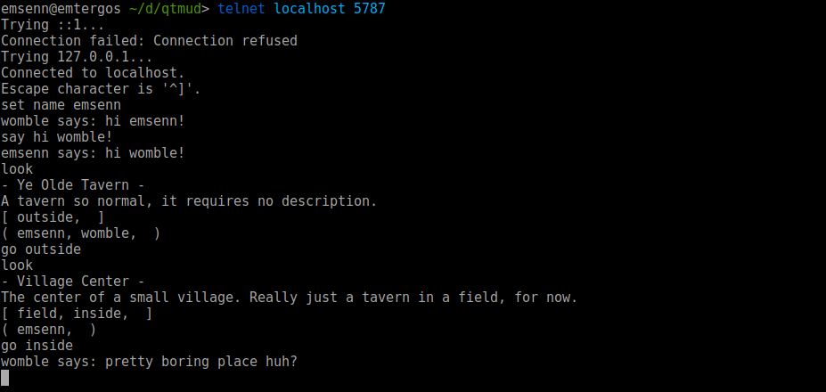

qtmud documentation¶
qtmud is an early alpha multiplayer text-based real-time virtual world simulator.
Clients (players) receive verbose descriptions of environments, objects, other
players, and actions performed in qtmud’s simulated world. In order to interact
with the game engine, clients then type out things they want to do, such as
move outside or fight dragon.
Know what you’re doing? If you want to dive on in, here’s an overview of game mechanics with links to the relevant source code:
Inqtmud, amanagercontrolsserviceswhichsubscribetoevents. When an event isscheduled, themanagercalls it the nexttick. Theseeventsact uponthingswhich have hadqualitiesappliedto them.
Less informed? Don’t worry - one of the main focuses of qtmud is that it be easy to understand from just the documentation. If you read through the rest of this document, you’ll end up with a good understanding of what happens when you run qtmud, and what’s happening when players log in and do things.
But first, it might help to show you what gameplay in qtmud looks like, since you may not be familiar with MUDs.
Current Gameplay¶
[insert explanation of screenshot here]
Running qtmud¶
Running qtmud is pretty simple. I’m going to assume any reader is on a *nix-type system and is able to do simple tasks like open a terminal.
Download & Configure¶
The best way to get a copy of qtmud is to clone the repository.
Once you’ve done that, you might want to edit the constants in the main
qtmud module, which is the __init__.py file in qtmud’s main
directory.
The four constants you might want to change right away are:
NAME- the name that your MUD will go byVERSION- the version of your MUD. Check out qtmud Versioning for more information.HOST- the hostname your MUD will serve over.MUD_PORT- the port your MUD will serve over.
Once you’ve got those set up, you’re ready to start your MUD.
Starting qtmud¶
After you’ve set that up, use python3.5 to run execute ./run.py. You
should see some output that looks similar to this:
instancing Manager()
qtmud INFO Manager() instanced @ qtmud.manager
qtmud INFO instancing services
qtmud INFO instancing qtmud.manager.back_room
The first line, instancing Manager(), creates an instance of
qtmud.Manager, a class which acts as the main game engine. If
this were Dungeons & Dragons, qtmud.Manager would be the
Dungeon Master. Each moment of the game is divided into
ticks, and each tick, qtmud.Manager handles telling everything
what it should be doing.
After ./run.py sets up qtmud.Manager, it instances core game
services. The current services are
MUDSocket (for handling the sending and
receiving of data from clients through a socket connection),
Mover (for handling things moving between
rooms), and Parser (for handling input
from clients.)
While each of these services handle very different parts of the game, they
all work in much the same way, through three functions that
qtmud.Manager has:
qtmud.manager.schedule()tells the manager to schedule the command for next tick. For example, when a client logs in,MUDSocketcallsself.manager.schedule('move', thing=client, destination=Village)qtmud.manager.subscribe()tells the manager that aservicewants to be informed about any relevantevents. For example, theParserservice doesqtmud.subscribe(self, 'parse')when it is instanced.qtmud.Manager.tick()relies onscheduleandsubscribe. For every service subscribed to an event,ticksends every relevant event to that service. For example, on the tick after theMUDSocketschedules the client to be moved into theVillage,ticktells theMoverto handle the actual movement.
After these services are instanced and their subscriptions properly set up,
qtmud.Manager sets up what is (inappropriately) being called the
qtmud.back_room. The back room is simply the first room clients are
put in when they log in. Instancing it now gives us an excuse to talk about how
objects within qtmud work.
When you call qtmud.Manager.new_thing(), a few things happen. First, an object is instanced and given a unique identifier (available through
thing.identity) and the capacity to have Qualities. Then, any qualities
you list as an argument are applied to the thing.
In the case of the back room, we’re making a new thing with the
Village quality. If you look at that class,
you’ll see when applied to a thing, it applies the
Room and
Renderable qualities.
Room- Gives a villageexits, such as{ 'inside' : Tavern }, where Tavern is a quality to be applied to a thing.Renderable- Gives the village anameanddescription.
Once the village has all the attributes it needs, it has them set to the specific values for that thing.
Logging In¶
Now qtmud has instanced the manager, added services, and added the
back_room, you can connect to your MUD. Open up your favorite MUD client
(or just a terminal) and connect to your server. If you’re using telnet,
it’d be telnet://HOST:MUD_PORT. (If you didn’t change HOST or MUD_PORT
earlier, the terminal command would be telnet localhost 5787.
When the MUDSocket receives a new
connection, like it did when you just telnet’d, it runs the following:
client = self.manager.new_thing(Client,
Physical,
Renderable,
Container,
Sighted,
Speaking)
To learn specifically how the new_thing
function works, read its source documentation. For now, it’s enough to
know it instances a new thing and applies the listed
qualities to it. Each quality listed is a class,
imported from (in this case) qtmud.qualities. Each quality has an
apply function, which adds attributes
to the thing that new_thing created.
We assigned a lot of qualities to our incoming client, let’s see what they all do:
Commandablelets future qualities addcommandsto this thing.Clienttells theMUDSocketwhat socket connection the client is associated with, and because the client isCommandable, give it theecho,whoami, andsetcommands.Physicalgives the client alocation, and because it’scommandable, thewhereamiandmovecommands.Renderablegives the client anameanddescription.Containergives the clientcontentsand theinventorycommand.Sightedgives the client thelookcommand.Speakinggives the client thesaycommand.
The client started as a thing with only an
identity, but by the end of
new_thing, it has all the attributes a
client needs to interact with the MUD. qtmud.Manager also has recorded
in qtmud.Manager.qualities that the keys for each Quality applied
now have our client’s thing as a value.
Clients, through their thing, can move and say and look and all that other good stuff. Now that
the client has all the proper qualities,
MUDSocket can properly handle receiving data from and sending data to the client. Let’s bring it back to services, by walking through what happens when you enter a command, such as say hello.
Entering Commands¶
Each event is broken up into two parts: the event and its payload. The event is what subscribers are set to look for. The payload is all the other data associated with the event.
When a client hits enter (letting MUDSocket know there’s been a command entered,)
MUDSocket does some basic parsing,
breaking the command into its first word (cmd) and the rest of the
line (trailing). Then, MUDSocket
does:
qtmud.manager.schedule('parse', # the event that will be scheduled
client=self.clients[conn], # payload
cmd=cmd, # payload
trailing=trailing) # payload
This means that on the next tick,
qtmud.Manager will tell every service
who has subscribed to the parse event
everything in the payload, through that service’s own
tick. In this case, that means the
Parser will get told the client who
issued the command, the cmd itself, and any trailing arguments the
cmd might have.
So if the client enters the command say hello, MUDSocket turns that input into
qtmud.manager.schedule('parse',
client=self.clients[conn],
cmd='say'
trailing='hello)
On the next tick, qtmud.Manager tells
every service subscribed to 'parse' about that event. Right now, the only service subscribed to 'parse' is the
Parser service.
The Parser service, like every other
service, has its own tick function,
which can be given a dict of events. If last tick
MUDSocket scheduled the parse event for
the client’s say hello, this tick the manager would pass events to the Parser,
looking something like this:
[('parse', {'cmd': 'say',
'client': <qtmud.Thing object at 0x7f4dcd0e3a58>,
'trailing': 'say'}
)]
From a Python perspective, events is a list of tuples, where the first element is the event and the second element is the payload.
What each service does with the events it receives is based on what the
service accomplishes. The Mover service
uses the payload it receives to handle moving things in and out of locations. The Parser service uses the payload
to determine whether what the client input was a valid command, and if so,
passes the rest of the payload off to that command. (If you remember from
logging in, commands are added to the client by the qualities
MUDSocket
passed to new_thing when we logged in.)
In the case of say hello, the say command is added by the
Speaking quality, which also added
the say function, to be called when
the command is used. say ,qtmud.qualities.Speaking.say>() is pretty
simple - schedule service so every client in our
location will have our message
rendered during the next
tick
Other commands work in much the same way. The move command is added by
the Physical quality, which has the
func:move <qtmud.qualities.Physical.move> function. The look
command is added by the Sighted quality,
which has the look function.
Messing Around¶
Walking through what happens when you start qtmud and log in and ‘say hello’, we’ve touched on most of the core functions of the game. I’d suggest looking through the ./quality/ and ./services/ directories to see how more of qtmud’s core features work. In the next section, we’ll look in the ./lib/ directory, and explain how writing content for qtmud works.
Development¶
There are two main ways to add content to qtmud. You can build services to respond to the events beings scheduled by things and other services, or you can build qualities to apply to things.
The latter, creating qualities, is probably a better starting point for learning how to work with qtmud.
there’s no more explanation, come back later
Dogma¶
- every action should be scheduled and tick()ed - no intrafunction changes.
Versioning¶
qtmud uses semantic versioning. check qtmud Versioning for more.